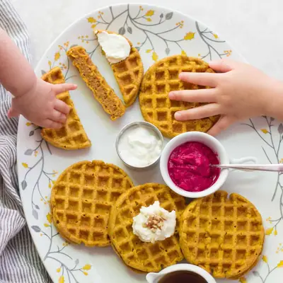

Healthy Pumpkin Waffles

Ingredients
- 1 1/2 cups (235g) whole wheat flour
- 1/4 cup (25g) rolled oats
- 2 teaspoons pumpkin pie spice
- 1/2 teaspoon cinnamon
- 2 teaspoons baking powder
- 1 1/2 cups whole fat milk
- 3/4 cup (180g) pumpkin puree
- 2 eggs beaten, at room temperature
- 2 tablespoons butter, melted
- 2 tablespoons maple syrup (leave out for babies, see notes)
- 1 teaspoon pure vanilla extract
Steps
- In a large mixing bowl, whisk together all of the wet ingredients until well combined.
- Add the dry ingredients to the bowl and stir just until combined. Be careful not to overmix. Allow the batter to sit for about 10 minutes. This gives the oats and flour time to absorb some of the liquid and helps create soft, fluffy waffles.
- Preheat and lightly grease your waffle maker, if needed. Scoop about 1/4 cup of batter into the waffle maker and cook according to the manufacturer’s instructions, until golden brown and cooked through.
- Combine wet and dry ingredients together. Be careful not to over mix. Let the batter sit for 10 minutes or so.
- Preheat waffle iron. Grease by brushing or spraying with oil. Pour in 1/4 cup batter (or more if using a regular sized waffle maker) and cook according to manufacturer's directions until golden brown. If using the one I recommend here, 2 minutes and 45 seconds was perfect!
- Enjoy warm with your favorite toppings, or allow the waffles to cool completely and freeze for an easy breakfast later.
Recipe by Min Kwon · Kidfriendly Meals, from MJ and Hungryman. Saved here for personal use; the original has the full notes, tips and photos. Open original